Primeiros passos
Este documento tem como objetivo ajudá-lo a configurar o Franzininho WIFI para o uso no CircuitPython em seu computador. Provavelmente ao inserir sua placa apareceu como uma unidade de disco. Confira a seguir mais instruções para o isso!
Introdução
Antes de começar a diversão de programar a Franzininho WIFI e o CircuitPython, precisamos realizar alguns passos de configuração para determinado sistema. Veja abaixo o sistema e faça o passo a passo!
Instalação
Nesta etapa vamos preparar o ambiente para você usar sua placa Franzininho WIFI, escolha seu sistema operacional e siga o passo a passo de como fazer esta configuração.
Windows
Para a instalação no windows você deve seguir o passo a passo deste tutorial.
- Acesse o site, acesse este link: https://codewith.mu/ e clique em Download:
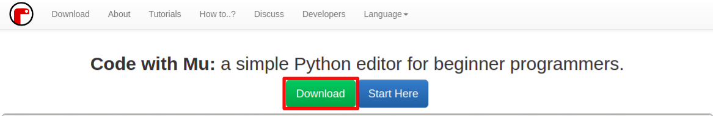
- Após isso clique na opção Windows Installer.
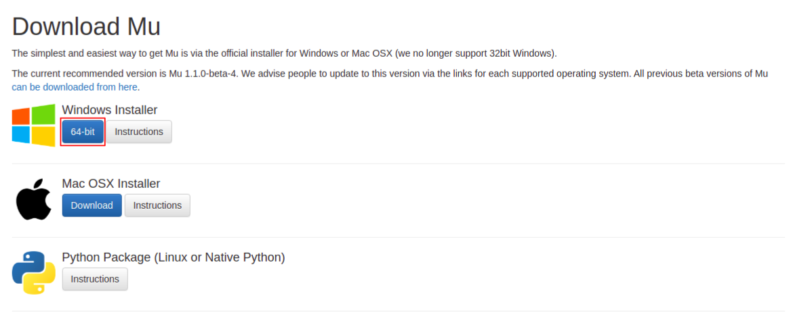
- Salve em seu computador.
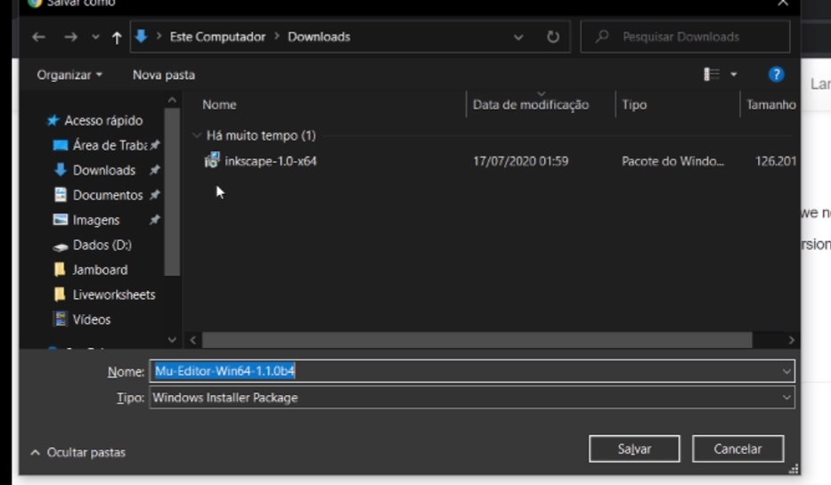
- Aguarde até fazer o download e após isso clique em abrir o arquivo que você acabou de baixar.
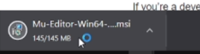
- Ao abrir o programa, irá aparecer uma tela onde você terá que aceitar os termos de uso do software, clique na caixa de seleção.
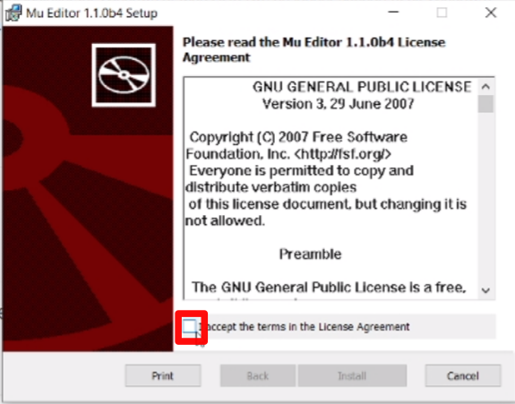
- Então o botão de install será ativado, clique nele.
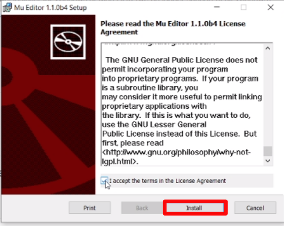
- Aguarde a instalação.
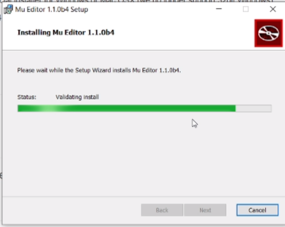
- Procure em seu computador Mu Editor
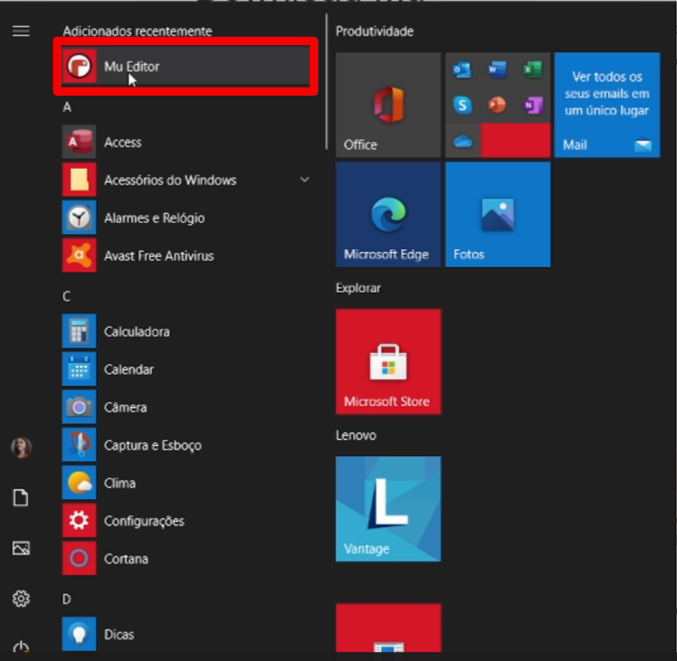
- Então ao abrir uma janela, escolha Circuit Python, conforme a imagem abaixo:
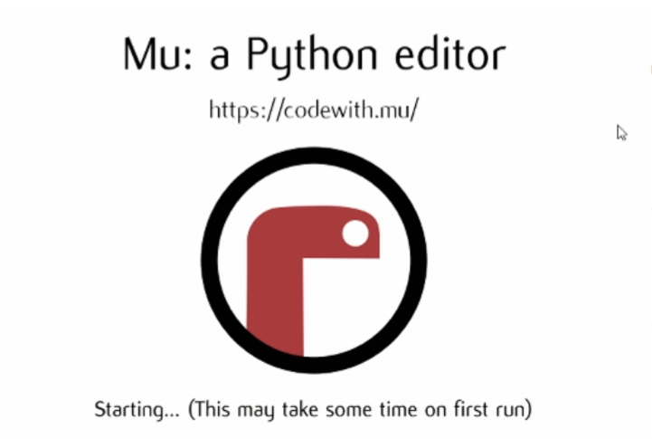
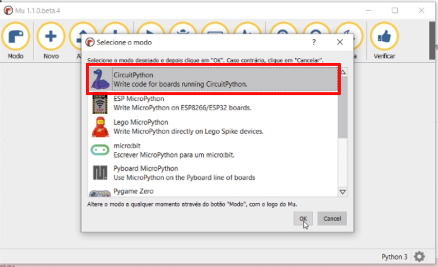
- Pronto, agora é só se divertir!
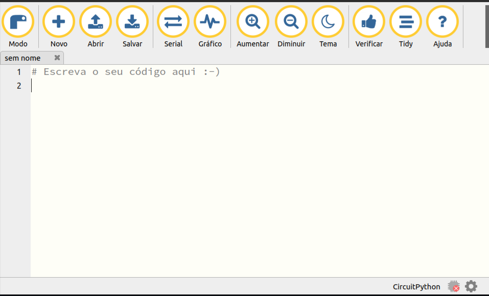
Linux
Para a instalação no Linux você deve seguir o passo a passo deste tutorial
No linux o primeiro passo é interagir com REPL, antes de usar um editor. O primeiro passo é utilizar via terminal serial e depois a como utilizá-lo no editor MU. No próximo tópico vamos aprender a como usar o REPL através do terminal serial.
Terminal
O primeiro passo é conectar a placa Franzininho Wifi em seu computador e logo irá aparecer algo parecido com um dispositivo de pen drive, conforme a imagem abaixo:
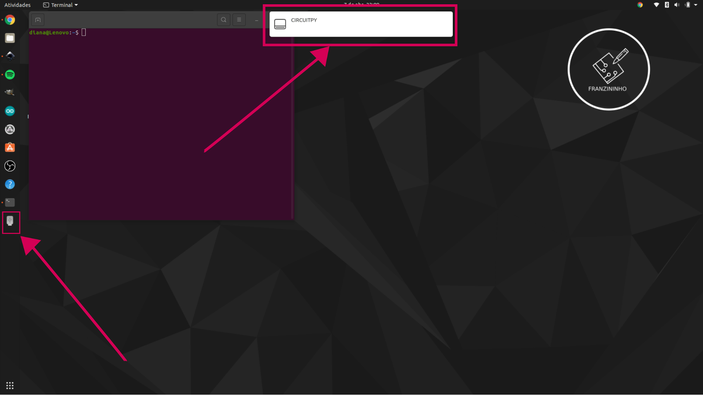
Antes de sair abrindo os arquivos, faça o seguinte passo:
1 - Conecte a Franzininho
2 - Abra o terminal
3 - Instale um terminal, por exemplo, para instalar o picocom, digite os comandos abaixo:
sudo apt-get update
sudo apt-get install picocom
4 - Para acessar o terminal serial, digite o seguinte comando: picomcom /dev/ttyACM0 de enter.
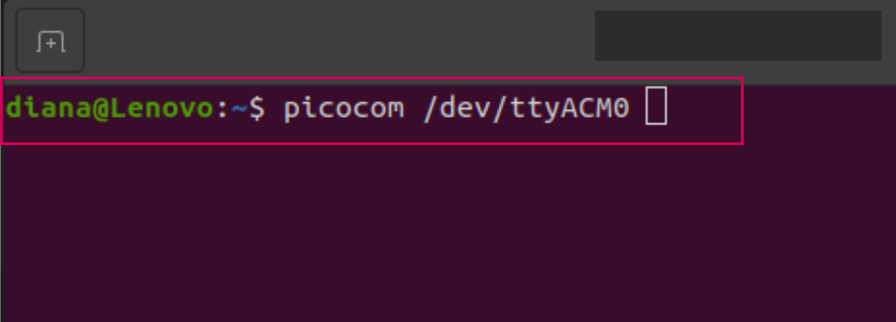
5 - Agora aperte o Ctrl C do teclado e então aparecerá >>>
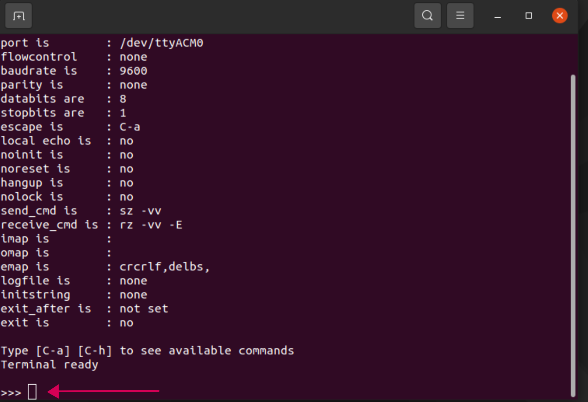
6 - No terminal digite: print(“Hello World”) e aperte o enter (você pode escrever qualquer coisa dentro das aspas, então aparecerá o que você escreveu.
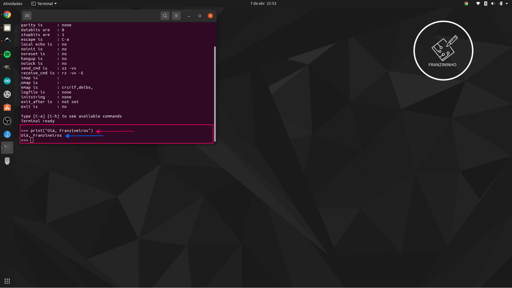
7 - Agora vamos fazer uma operação matemática, digite um valor | escolha uma operação matemática e digite outro valor, aperte o enter e veja o resultado, conforme a imagem:
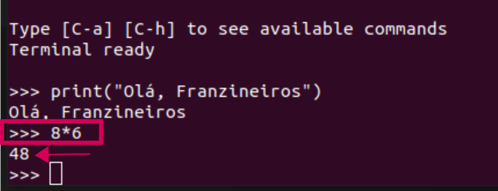
8 - Agora digite o seguinte código no terminal:
import board
dir(board)
Então aparecerá o conjunto de pinos disponíveis na Franzininho Wifi.
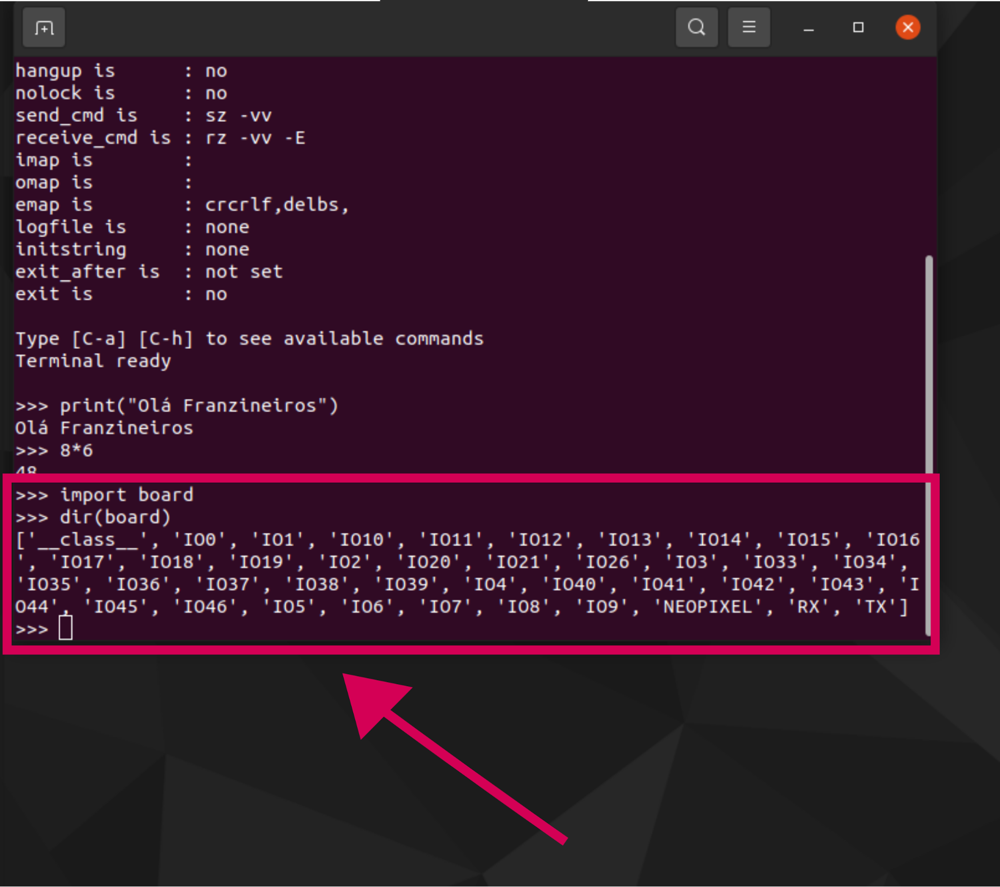
Agora que você já sabe quais são os nomes dos pinos da placa e também interagir com REPL. Podemos fechar o terminal e dar início abrindo o arquivo code.py que está na pasta.
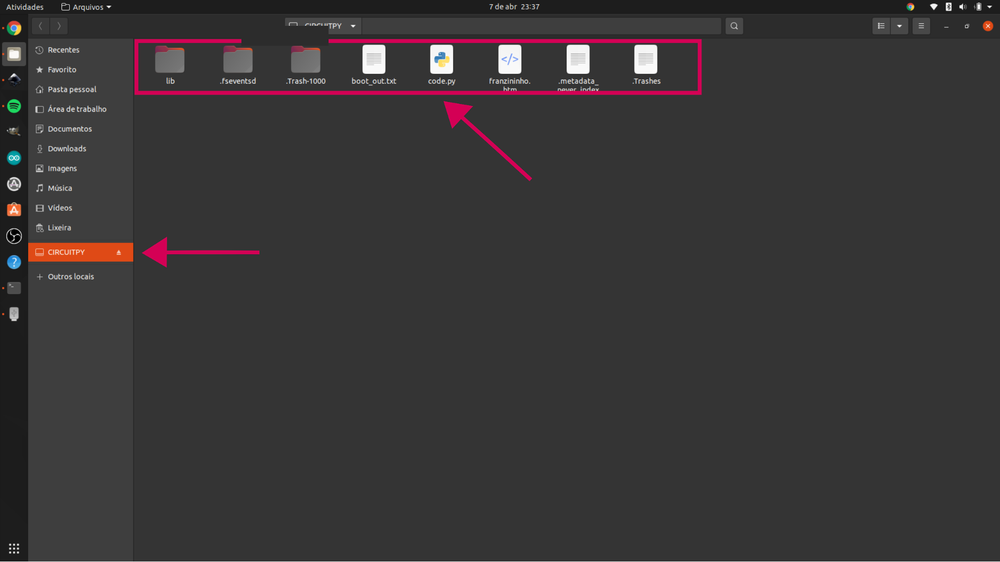
Editor Mu
Para a instalação no Linux você deve seguir o passo a passo deste tutorial
- Acesse o site, acesse este link: https://codewith.mu/
- Clique na opção Python Package (Linux or Native Python)
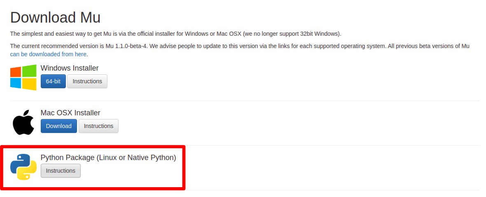
- Abra seu terminal e digite o comando abaixo, ele vai instalar bibliotecas do python, aguarde até finalizar:
pip3 install mu-editor==1.1.0b4
- Agora digite este comando:
mu-editor
Pronto!